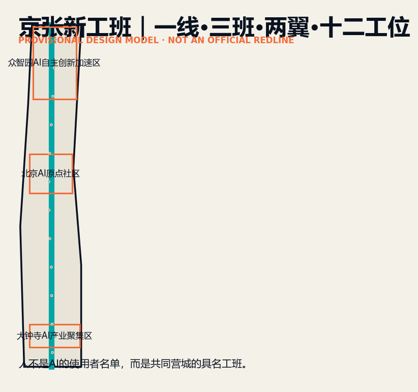
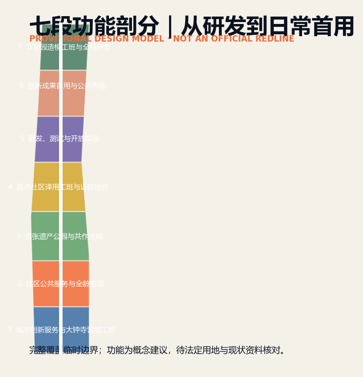
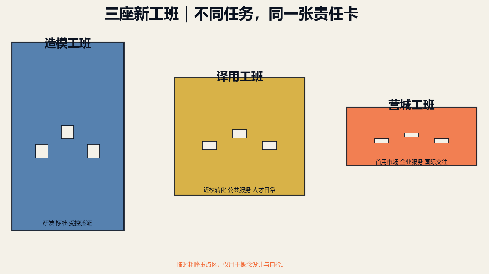
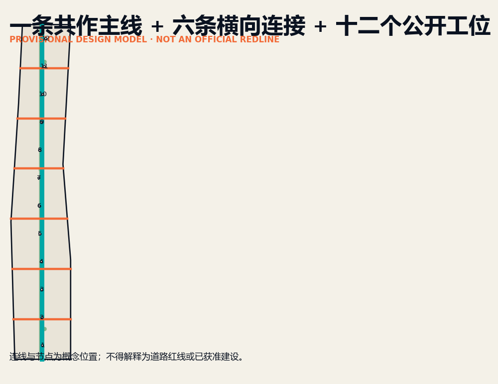
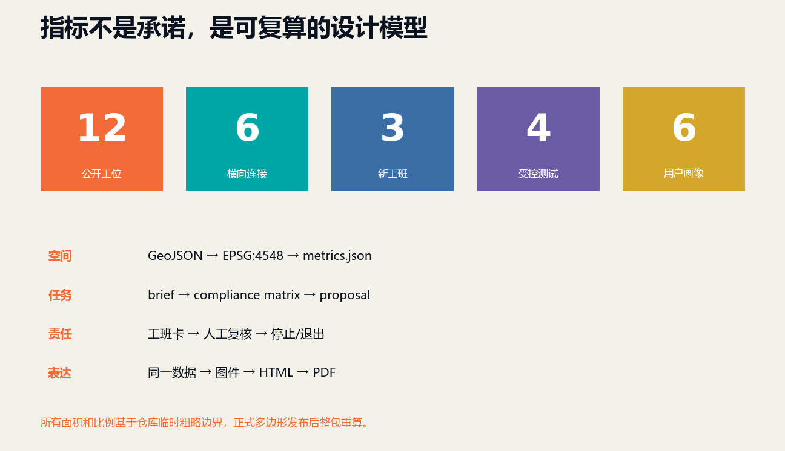

京张新工班 / THE NEW CREW
以百年京张的工班精神为原型，构建人—Agent共作、可复核、可退出的AI创新带。
京张新工班 / THE NEW CREW
参赛者：阿南 / Neo（GitHub: Nan-findf） 一线·三班·两翼·十二工位——人不是AI的使用者名单，而是共同营城的具名工班。
设计依据与资料清单
本方案把官方公告、面向智能体任务书、仓库结构化场地包和国家城市设计相关标准视为四层证据，不把竞赛叙事误写成法定控制。公告确定43.6平方公里统筹研究、11.4平方公里总体设计与三处368.4公顷重点区域；仓库目前只提供临时粗略边界，因此全部面积、比例和空间落点均为可复算的概念设计模型，不能作为红线、审批或建设承诺。正式多边形发布后，必须整体替换边界，并重算用地、道路、绿地、公共空间、建筑、分期、指标、图件和HTML，而不是局部修图 来源 来源 指标。
方法上沿用“事实—价值—空间—实施—校核”的闭环：先把已知事实、数据缺口和设计假设分栏；再以公共利益、创新生产与遗产连续性确定价值顺序；随后把判断写入GeoJSON和项目清单；最后由指标、合规矩阵和人工复核形成可追踪证据链。案例仅借鉴机制：one-north的混合创新街区、Kendall Square的公共空间网络、MaRS的转化服务、22@的更新治理、Paris-Saclay的科研生活融合、河套的跨境协同；不复制其图形、标识或结论，完整网址和用途边界见sources.json 标准 深度。

三层范围工作框架
三层范围不是三套互不相干的图纸，而是一条由战略到街角的决策链。统筹研究层回答“海淀如何把高校、模型、企业、专业服务、开放场景和全球交流组织成长期创新生态”；总体设计层回答“京张遗址公园两侧如何通过更新、交通、蓝绿网络和公共设施承载这一生态”；重点区域层则以众智园、AI原点社区、大钟寺三个“新工班”检验功能、建筑、公共空间、运营与治理是否能落地。每个上位判断都必须在下一级找到空间或项目证据，每个局部动作也要说明其对整条创新带的贡献 深度 空间数据。
总体结构为“一线·三班·两翼·十二工位”。“一线”是沿百年京张展开的人—Agent共作线；“三班”分别是众智园模型工班、原点社区转译工班、大钟寺营城工班；“两翼”是中关村专业服务翼与小月河真实生活测试翼；“十二工位”是分布在公共空间中的轻量、可预约、可撤回服务节点。该结构不是新设行政边界，而是把技术链、服务链和日常生活链叠合到现有城市肌理中的工作框架。临时用地带完整覆盖临时总体边界，中央慢行绿脉和六条横向缝合线只表达连通意图，待官方道路、地块和权属资料到位后校准 空间数据 空间数据。

统筹研究范围产业与未来城市研究
“京张新工班”拒绝把AI创新带理解为一条展厅带。百年京张由一代代工班共同建成，今天的AI城市也应由研究者、企业、专业人员、居民、维护者与Agent共同生产。产业链因此被重写为“策源—验证—转译—首用—维护—复盘”：高校与实验室提供源头知识，众智园提供自主模型与安全验证，原点社区把研究转译为创业和公共服务，大钟寺形成城市首用市场，中关村两翼提供法务、资本、标准与国际服务，小月河两翼提供真实生活场景；每次部署都必须留下可复核的公共回报 来源 深度。
品牌符号采用“轨枕/括号/交接印”三义合一：两条平行线来自铁路轨道，也像人与Agent的并行责任；横向节点既是轨枕，也是工班交接记录；开放括号表示城市问题始终允许新的参与者进入。中文主名“京张新工班”，英文名“THE NEW CREW”，传播句为“Build intelligence. Hand over the city.”。视觉资产在本包中只以原创几何、字体排版和数据图层表达，不调用外部Logo。品牌不是表皮，而是每个工位、工班卡、年度开放周和数字记录的统一识别系统 标准 深度。
总体设计范围城市更新与控规深度城市设计
总体设计采用七段连续功能带：大钟寺城市创新服务、全龄生活支持、京张遗产公园、原点社区转译、开放测试研发、创新首用市场、众智园全栈研发。七段不是新的法定用地，而是对临时边界的概念性完整覆盖，用来检验功能连续、南北协作和公共空间承载。更新策略优先利用既有建筑首层、闲置场地、桥下空间和园区界面，通过小尺度嵌入形成服务网络；只有在权属、现状质量、控规和工程条件核实后，才进入拆改留与强度决策 空间数据 深度 深度。
空间骨架由中央共作线、六条横向缝合线、十二个公共工位、三组工班院落和三处朝圣地标组成。中央线优先步行、骑行、无障碍与低速服务；横向线连接社区、轨道站、高校和企业；工位提供咨询、展示、预约、反馈和应急退出；院落承载小型测试和共同工作；地标分别是“百年工班档案馆”“人—Agent共作棚”“城市交接台”。建筑高度、容积率、道路红线、市政容量和保留清单目前均不具备官方依据，统一列为unknown，图上九个建筑基底仅为类型原型 空间数据 指标。
重点区域详细设计
众智园“模型工班”把封闭研发园区转为可验证的花园型研发街区：沿清河组织低碳开放界面，以模型证明室、开放工具间和百年工班档案馆构成从安全评测到公众理解的序列。核心受控测试包括自主模型安全评测、低碳算力负荷调节和园区慢行辅助；技术结论由专业人员签署，公众可以看到用途、数据、误差与停止条件。建筑原型只表达首层开放、共享院落和可变测试空间，不预设高度与总量 空间数据 深度。
AI原点社区“转译工班”连接高校知识与城市日常：城市转译室负责把论文与模型变成可理解的服务问题，人类服务台接住无法由Agent处理的个案，人—Agent共作棚让师生、创业者、居民和公共部门共同测试。大钟寺“营城工班”以首用市场、营城工作室和城市交接台形成从企业产品到公共采购、从展示到维护的闭环，并围绕轨道站四象限改善步行联系。三处片区各自设置工班负责人、现场运营者和停止权持有人；正式深化需补齐地块、站点、道路、权属、文保与市政条件 空间数据 空间数据。

AI 创新生态、人才画像与 AI+ 场景
六类具名画像贯穿设计：开源开发者需要可信发布与贡献记录；初创团队需要低成本验证、法务和首用客户；头部企业来访者需要国际接待和城市级示范；周边居民需要低扰动服务、休闲与申诉入口；高校师生需要近校转化与跨学科协作；一线维护者需要可解释告警、培训和最终处置权。画像不用于个体追踪或商业推荐，只用于检验空间、服务和治理是否遗漏真实的人 来源 深度。
十二张工班卡对应十二个公共工位：01开源发布、02模型安全沙盒、03端侧算力驿站、04无障碍慢行助手、05国际路演客厅、06清河低碳廊、07近校成果转化、08数据合规会客厅、09全龄生活服务、10京张记忆导览、11城市维护协同、12年度城市交接。卡片固定记录问题提出者、技术提供者、专业责任人、现场运营者、停止权人、数据最小集、人工复核、公共回报和退出方式。02、04、06、11为四个受控测试场景，先在限定时间和限定区域运行，达到误报、扰动、能耗或安全阈值即停止 空间数据 指标。
用地、建筑规模与拆改留方案
七段用地带采用仓库允许的国土空间用途编码，几何完整覆盖临时边界且不重叠；其目的在于验证“研发—转译—生活—遗产—首用—服务”的组合，而不是宣告控规调整。绿地和十二个工位作为叠加层单独计算，避免把公共空间比例与主导用地混为一谈。临时边界面积约1141.28公顷，绿地叠加约9.56%，公共工位占地约0.25%；二者都是方案模型值，绝非规划承诺，正式数据更新后由脚本重算 空间数据 指标 指标。
拆改留使用四步门槛：先识别遗产、公共价值和结构安全，再核对权属、运营与碳成本，之后比较保留、微改造、功能置换和新建的全寿命收益，最后由规划、建筑、结构、消防与文保专业人员签字。当前九个建筑基底只代表三类空间工具，每个重点区三个：证明/工具/档案，转译/服务/共作，首用/营城/交接。它们的位置、轮廓和功能均为conceptual，不能推导拆除对象、建筑面积、容积率或高度 空间数据 深度。
交通、轨道、市政与公共服务设施
交通策略不是增加一条快速路，而是修复京张南北公共空间与东西城市生活之间的断裂。中央共作线承担连续步行、骑行、无障碍、遗产导览和低速维护；六条横向缝合线把三个工班、轨道站、高校、企业、社区和河道连接起来；十二个工位提供停留、补给、导视、反馈和夜间安全。路线仅为概念中心线，不是道路红线；正式方案必须叠加站点出入口、道路等级、过街、桥下净空、交通流量、消防和地下管线 空间数据 深度。
市政与数字基础设施采用“可插拔、可计量、可退出”的工位接口：端侧算力只处理必要数据，敏感信息默认不离开设备；能源、雨洪、照明和设备状态以聚合数据辅助维护；所有自动建议保留人工确认和纸面替代路径。公共服务优先嵌入既有社区设施与园区首层，避免另建孤立的“AI中心”。电力容量、通信、排水、防洪、环卫、消防和数据安全条件尚缺，均作为实施前置条件进入assumptions与合规矩阵 空间数据 深度。

蓝绿空间、公共空间与城市风貌
蓝绿结构以京张遗址公园为连续公共脊柱，以清河、小月河和横向社区连接为生态与生活支线。绿地叠加模型包括中央缓冲绿脉和三个工班院落，用来承载雨洪、遮阴、低碳交往、运动和小尺度测试；十二个工位保持小体量、可逆安装和无障碍到达。涉及河道蓝线、防洪、树木迁移、历史环境和地下空间的设计必须等待正式资料，不能以视觉连续代替工程可行 空间数据 深度。
风貌语言来自铁路基础设施的克制、重复和耐久，而不是仿古装饰：深墨色表示责任记录，青色表示公共协作，橙色表示需要人工确认的风险节点，轨枕网格用于导视与地面标记。三处地标形成“来访—共作—交接”的朝圣序列：北端百年工班档案馆记录工程与开源贡献；中段人—Agent共作棚展示进行中的城市任务；南端城市交接台公开年度结果、失败案例和下一班任务。任何企业标识、人物肖像或历史图片后续使用前均需清权 标准 指标。
更新项目清单、实施政策与分期计划
近期“开班”以低成本、可撤回为原则：完成官方资料核对，设置3个示范工位与一套工班卡，试运行无障碍慢行、模型安全、低碳维护三个受控场景，并建立申诉、停止与审计流程。中期“联班”实施六条横向连接的优先段，开放三处工班院落，嵌入法务、知识产权、采购、人才和国际服务。长期“交班”才扩展为十二工位网络、年度开放周和跨片区服务协议；每一阶段以前一阶段的公共价值、运营能力和安全证据为继续条件 空间数据 深度。
项目包包括：JZ-01中央共作线、JZ-02六条横向缝合、JZ-03十二公共工位、JZ-04众智园模型工班、JZ-05原点转译工班、JZ-06大钟寺营城工班、JZ-07百年工班档案馆、JZ-08人—Agent共作棚、JZ-09城市交接台、JZ-10年度新工班开放周。每项必须有空间对象、运营主体、专业负责人、资金与审批依赖、停止条件、维护预算和评估指标。政策重点是允许“小规模首用+可撤回测试”，同时禁止Agent替代审批、专业签章和公共责任 深度 来源。
指标体系、面积复算与合规矩阵
核心空间指标全部由GeoJSON投影到EPSG:4548后复算：临时总体边界约11,412,825平方米；绿地叠加约9.5619%；十二公共工位约0.2452%；另记录7段用地、9个建筑原型、7条路线、3个重点片区和3个实施阶段。用地覆盖与重叠、图层越界、几何有效性和指标一致性由仓库脚本检查。由于边界是provisional，核心指标置信度均为low；指标的价值是保证“文本—图层—图件—PDF—HTML”一致，而不是制造精确承诺 指标 指标 深度。
运营指标分为输入、过程、结果和护栏：输入看场景开放时数与专业人员配置；过程看工班卡完整率、人工复核率和反馈响应；结果看慢行连通、企业首用、居民获得感和维护时效；护栏看误报、投诉、数据事件、能耗与停止次数。十二场景、四个受控测试、六类画像、三处地标均已进入metrics。合规矩阵逐条映射公告1.3—1.5与agent.1—agent.6；unknown控制指标继续保留原因和补数路径，不以估算值占位 指标 指标 标准。

风险、版权与合规说明
首要风险是临时边界被误读为正式红线，因此中文、英文、图件、PDF和HTML均保留醒目标注。第二是技术展示压过公共利益，因此任何场景必须具名问题提出者、专业责任人、现场运营者与停止权人。第三是自动化越权：Agent只做检索、比选、生成、监测和建议，规划审批、专业判断、应急处置与公共问责始终由人承担。第四是运营空心化：没有维护主体、预算、培训和退出机制的项目不得进入下一阶段 深度 空间数据。
本包只使用仓库公开资料、原创文字、原创程序化图形与自生成空间图层；六个案例只做文字机制研究并登记官方网页，不嵌入其受版权保护的图片、地图或Logo。所有几何设计均为概念建议；现状建筑、权属、控规、道路红线、轨道接口、市政、防洪、消防、文保和树木资料缺失，正式深化前必须由相应专业团队复核。离线HTML不加载远程脚本、地图瓦片、字体、iframe、表单或API，也不跟踪评审者 来源 标准。
参考资料
官方依据包括赛事公告、智能体任务书、场地包、允许设计空间、规划限制、来源登记、枚举与国家城市设计/用地分类文件，机器索引见sources.json、standard_matrix.json与design_depth_matrix.json。项目内关键入口为brief/public-brief.md、brief/site-package/design_brief.json、brief/site-package/allowed_design_space.json、data/processed/agent_fact_pack.md和data/processed/missing_data_checklist.csv 来源 来源。
机制案例为JTC one-north、City of Cambridge Kendall Square公共空间、MaRS Discovery District、Barcelona 22@、EPA Paris-Saclay、深圳河套合作区。采用内容分别是混合街区与公共管理、公共空间网络、创新转化服务、存量更新治理、科研与生活融合、跨区域协同服务；均只用于比较与启发，不作为场地事实或官方背书。所有网页访问时间、用途、许可限制与“未复制外部图像”的声明已写入sources.json和report/copyright_statement.md。方案的最终事实边界以仓库维护者登记资料为准 来源 来源 深度。